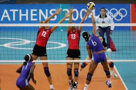
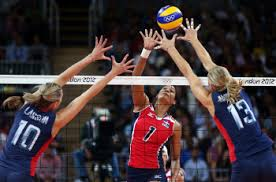
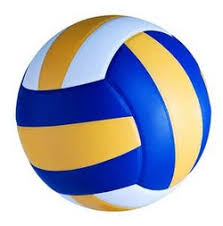

VolleyBall!
Volleyball is a very competitive and fun sport.It is a sport that has been changed for the beter so that the players can focus on their game.
In 1895 a man by the name of William. G Morgan created the sport Volleyball.The reason why volleyball is my favorite sport is because there is a lot of sportsmenship and there is a lot of competition.

Some facts about volleyball.In 1964 volleyball became an Olympic sport, Volleyball was originally called "Mintonette", volleyball was made to combined Basketball, Baseball, Tennis, and Handball, The net height is 7 feet, 11 5/8 inches for men and 7 feet, 4 1/8 inches for women.

Volleyball took some of its characteristics from tennis and handball.
The first Beach Volleyball medals were awarded in 1996 in Atlanta.
The Volleyball Hall of Fame was founded in 1971 and is located in Holyoke MA. It has over 100 honorees including players, coaches, officials, and contributors.
During a match, players are known to vertically leap over 300 times.
there are many different types of volleyball designs.This is one of the

By:True Willis.